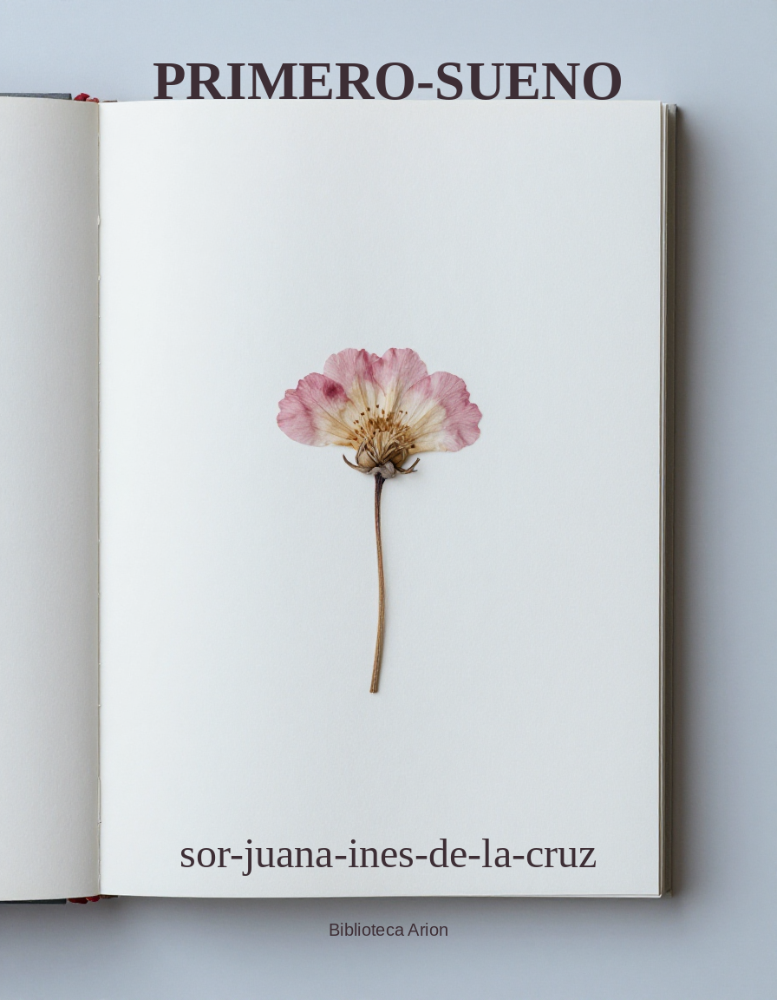

Primero-Sueno
Catholic Encyclopedia (1913)/Spanish-American Literature
Autor: –autor Font: wikisource Llengua: –obra
The literature produced by the Spanish-speaking peoples of Mexico, Central America, Cuba and adjacent islands, and of South America with the notable exceptions of Brazil (whose speech is Portuguese) and the Guianas. In the main the methods and the ideals of the Spanish-American writers, whether those of the colonial period or those of the period which has elapsed since the various American states achieved their independence, have not differed radically from those of Spain, the motherland. In spite of the acerbity due to political differences, the Spanish-American colonies and republics have never forgotten that they are of the same race, the same religion, and the same speech as the Spaniards. Quite unlike the settlers of North America, the colonists who came from the Latin countries of Southern Europe made no organized attempt to extirpate the aborigines, and the latter still remain to the extent of millions in number. Some of the aboriginal races still maintain their languages, more or less interlarded with Spanish words, but the intellectual development given to them has been limited. The literature of the indigenous Indian population, mixed or pure, is Spanish no less that that of the descendants of the Spanish colonists. Naturally, in the colonial period, when the work of discovery, exploration, and settlement was being carried on, the literary output was not very great; yet it compares favourably, to say the least, with the output in French and British North America. In the early times of the colonies no few Spaniards, whom chance or an adventurous spirit brought to the new qworld, wrote their most notable works there. Among the number is one of considerable worth, Alonso de Ercilla (1533-94), the author of an epic poem”, “La Araucana”. This deals with the conflicts between the Araucanian Indians and the invading Spaniards, and has the honour of being the first distinguished piece of belles-lettres produced in the New World, antedating by far any comparable works written in North America. Just as men of Spanish birth composed their prose or verse documents in America, so, also, certain American-born colonials passed over to the motherland and, writing and publishing there, added lustre to the history of the literature of the Iberian Peninsula. A good example is Juan Ruiz de Alarcón, one of the most admired of Spanish dramatists of the siglo de oro, whose play, “La verdad sospechosa”, furnished Corneille with the inspiration and material for his “Menteur”, which in its turn is the cornerstone of the classic comedy of France. The printing press was set up in the new regions in 1539, eighty years before the Pilgrims reached Massachusetts, and about 1550 Charles V. signed the decree establishing the University of Mexico. To some among the explorers wse are indebted for accounts of their journeys of discovery and conquest. These writings of scientific and historical interest were followed in later generations by others treating mainly of botanical and astronomical subjects, to the study of which the impetus was given by the labours, on the soil, of noted foreigners such as the Spanish botanist José Celestino Mutis (1732-1808), the Frenchmen La Condamine, de Jussieu etc., and, of course, the great German Alexander Humboldt. As might be expected, Gongorism, the plague of the literature of the motherland, infected the compositions of the seventeenth and the early eighteenth centuries in America. That neo-Classicism, which Luzán and his followers established in Spain, was echoed by this or that poet of the Western world. In the revolutionary period patriotic verse flourished, being governed chiefly by the models provided by the Spaniards Quintana and Gallego, who, with their heroic odes, had voiced the peninsula protests against the Napoleonic invasion. In terms hardly less passionate than theirs the insurgent Spanish colonists celebrated their struggle against the domination from over the sea. The romantic movement, following in the wake of neo-Classicism, had owed its great success in European lands to its evocation of traditions of the medieval past. Naturally, none such existed for the colonists of the newly-found lands, and it is rather with respect to matters of external form than those of substance that romanticism found a reflex in the Spanish-American literature. In general, it may be said that, of the various genres, it is the lyric that had received the greatest development in the Spanish American regions. The novel has been written with more or less success by an occasional gifted spirit; the drama has not fared equally well. For a more detailed consideration of the subject with which we are concerned it seems best to deal with it according to the geographical divisions marked by the existing states.
Mexico This was formerly the Viceroyalty of New Spain. It was the colony most favoured by the Spanish administration and in it culture struck its deepest roots. Here was set up the first printing press, and here was founded, as has been said, the first university, which, authorized by the Emperor Charles V, began its useful career in 1553. The first book was sent from the press in 1540; during the sixteenth century over a hundred works were published in Mexico. A number of Andalusian poets visited Mexico during the sixteenth and seventeenth centuries and influenced its literary productions. Among them were Diego Mejía (sixteenth century), who, shipwrecked on the coast of San Salvador, made there his Castilian version of the elegies of Ovid; Gutiérre de Cetina (1520-60); Mateo Alemán, the well-known author of the picaroon novel, “Guzmán de Alfarache”, who published in Mexico, in 1609, his “Ortografia castellana”; and possibly Juan de la Cueva, the first thorough-going dramatist, actor, and stage manager of the Spanish-speaking world. At Mexico City there was promoted in 1583 a poetical tournament (certamen poético) of the kind so much favoured in Latin Europe; about three hundred persons presented their verse compositions in this competition. Cervantes, in the “Canto de Caliope” printed with his “Galatea” in 1584, celebrates the Peruvian poet Diego Martínez de Ribera in equal terms with those in which he praises the Mexican Francisco de Terrazas, a contemporary of whom he says “tiene el nombre acá y allá tan conocido”. Various occasional lyrics and an unfinished epic, “Nuevo Mundo y Conquista”, constitute the known work of Terrazas. The “Peregrino Indiano” of Antonio Saavedra Guzmán, printed at Madrid in 1599, gives in its twenty cantos a very pedestrian account of the conquest of the region. Apparently the earliest specimens of the drama actually written in Mexico are those contained in the “Coloquios espirituales y Poesías sagradas” of Hernan González de Eslave, published in 1610, years after the death of the author, who may have been an Andalusian by birth. His plays are little religious pieces of the category of the auto and seem to have been written between 1567 and 1600. It may be remarked that from the very beginning of the Spanish rule it had been the custom to perform the little religious pieces called autos (two of the autos of Lope de Vega had been translated into the Indian dialect called Nahuatl), and the Jesuits, who constantly fostered scenic performances in connection with the work of higher education administered by them, did their best to develop an interest in the drama. Certainly a Spaniard by birth, but trained in Mexico and raised to the episcopacy as Bishop of Porto Rico, Bernardo de Balbuena (1568-1627) exhibits in his verse a love for both Spain and his adopted land, mingling therewith many reminiscences of his reading of classic poetry; he celebrates especially the beauty of external nature in his little poem “La Grandeza Mexicana” (Mexico, 1604 and 1860; Madrid, 1821-2; New York, 1828), which elicited praise from the Spanish poet and critic Quintana and which, in the opinion of Menéndez y Pelayo, is the poem from which we should date the birth of Spanish-American poetry properly so called. His chief work is “El Bernardo”, an epic showing the influence of the Latin epic poets and also of Ariosto. A Mexican by birth, Juan Ruiz de Alarcón’s (d. 1639) literary activity belongs to the history of the literature of Spain, where he passed the greater part of his life and died. His dramas are technically to be reckoned among the best in the Spanish classic repertoire. Gongorism infected the compositions of the Jesuit Matías Bocanegra, known chiefly for his “Canción al desengaño”. Carlos de Sigüenza y Góngora (1645-1700) was a scholar of importance who put forth documents dealing with matters of mathematical, philosophical, and antiquarian interest. Among his writings is his “Elogio fúnebre de sor Juana Inés de la Cruz”, praising the virtues of one of the most distinguished of the authoresses in Spanish that either the Old World or the New World has produced, unequal though her genius was in its manifestations. Before becoming a nun she was Juana Inés de Asbaje (1651-91), noted for both her beauty and her learning at the viceregal Court. To her earlier career belong her love lyrics and the still popular redondillas championing the cause of woman against her detractor, man. Some of her verses are devout and mystical in character; an auto sacramental (El divino Narciso) and little comedy (Los empenos de una casa) deserve particular mention. Gongorism, which mars certain of the writings of Sor Inés de la Cruz, continued to exert its baneful influence during the first half of the eighteenth century. Some of the pedestrian poets of the period are Miguel de Reyna Zeballos, author of “La elocuencia del silencio” (Madrid, 1738), and Francisco Ruiz de León, whose “Hernandía” (1755) is hardly more that a versification of the “Conquista de México” of Solís. The “Poesías sagradas y profanas” (Puebla, 1832) of the cleric Jorge José Sartorio (1746-1828) are mostly translations. On a higher plane than any versifier since the time of Inés de la Cruz stands the Franciscan Manuel de Navarrete (1768-1809), who reflects in his “Entretenimientos poéticos” (Mexico, 1823) the manner of Cienfuegos, Diego González, and other members of the Salamancan School. The events of the revolutionary war were sung by mediocre poets, such as Andrés Quintana Roo (1787-1851), who was the President of the Congress which made the first declaration of independence; Manuel Sanches de Tagle (2782-1847); Francisco Ortega (1793-1849); and Joaquín María del Castillo (1781-1878). The priest Anastasio María Ochoa (1783-1833) translated poems from Latin, French, and Italian, and produced some original compositions of a satirical and humorous nature (“Poesías”, New York, 1828; also two plays). More remarkable for his dramas than for his lyrics is Manuel Eduardo de Gorostiza (1789-1851, “Teatro original”, Paris, 1822; and “Teatro escogido”, Brussels, 1825). His plays are chiefly comedies of manners (see especially the “Indulgencia para todos” and “Contigo pan y cebolla”), and, having been written during his sojourn in Spain, form a kind of transition between the methods of the younger Moratín and Bretón de los Herreros. Through imitation of Espronceda, Zorilla, and other Spanish romanticists, the movement of romanticism spread from Europe to Mexico. It has its representatives already in the lyric poets and dramatists, Ignacio Rodríguez Galván (1816-42; “Obras”, Mexico, 1851; his verse “Profecías de Guarimoc” is the masterpiece of Mexican romanticism), and Fernández Calderon (1809-45; “Poesías”, Mexico, 1844 and 1849). Eclectic restraint, with a tendency towards classicism, as well as great Catholic fervour, actuates the works of two writers who are among the most careful in form that Mexico has had. These are José Joaquín Pesado (1801-61), who is the best known Mexican poet, and the physician Manuel Carpio Mexican poet, and the physician Manuel Carpio (1791-1860). Pesado translated from Latin (the “Song of Songs”, the “Psalms”, etc., from the Vulgate), Italian, and French, succeeding best in his version of the Psalms. In his composition entitled “Las Aztecas” he is supposed to have put into Spanish certain Aztec legends; like Macpherson in his dealing with Celtic tradition, Pesado doubtless added to the native legends matter of his own invention, but he certainly showed skill in doing this (“Poesías originales y traducciones”, Mexico, 1839, 1849, and 1886). In his narrative and descriptive verse Carpio treats generally of Biblical subjects. An admirer and imitator of the Spanish mystic and poet Luis de León was Alejandro Arango (1821-83). Materialism and so-called Liberalism inspire the verse of Ignacio Ramirez (1818-79) and Manuel Acuña (1849-73), while eroticism prevails in the effusions of Ignacio M. Altamirano (1834-93) and Manuel María Flores (1840-85). Juan de Dios Peza (1852-1910) devoted himself to the task of embalming in verse, which is not always as correct as it might be, many of the popular traditions of his country (“Poesías completas”, Paris, 1891-2). He is perhaps the most read Mexican poet of the second half of the nineteenth century. Some influence of the French school of Parnassiens may be detected in the “Poesías” (Paris, 1909) of Manuel Gutiérrez Najera (d. 1888).
Peru The position of pre-eminence occupied by Mexico in the Spanish part of the northern continent was held by Peru in the earlier history of the civilization of South America. But a gradual loss of territory and of political importance has greatly weakened the place of Peru among the Spanish-American states; and though Peru was once the heart of a great native Inca Empire, and Spanish governors ruled the greater part of South America from within its bounds during the colonial periods, its standing in the world of American politics and letters is to-day one of no great prestige. From the earliest period of the settlement there dates little of value. In the sixteenth century there comes to view Garcilasso de la Vega (1540-1616), surnamed the Inca, as he was of native origin on the side of his mother, a princess of the Inca race. He wrote in good Spanish prose his “Florida”, an account of the discovery of that region, and his “Comentarios reales”, dealing with the history of Peru and blending much legendary and fictitious matter with a statement of real events. During the golden age of Spanish letters both Cervantes and Lope de Vega praise a number of Peruvian poets. An unknown poetess of Huanuco, writing under the name of Amarilis, produced in her verses, addressed to Lope de Vega and praising him, the best poetical compositions of the early colonial time in Peru. Lope responded with his epistle, “Belardo á Amarilis”. Another anonymous poetess of this period wrote in tersarima a “Discurso en loor de la poesia” in which she records the names of contemporary Peruvian poets. An andalusian colouring was given to composition in Peru during the latter part of the sixteenth century and the early years of the seventeenth by the presence on her soil of certain Spanish writers hailing especially from Seville; among these were Diego Mexía, Diego de Ojeda, and Luis de Belmonte. Gongorism penetrated into Peru as everywhere else in the Spanish-speaking world, and found a defender there in the person of Juan de Espinosa Medrano. An impetus was given to poetical composition by a Viceroy of Peru, the Marqués de Castell-dos-Rius (d. 1710), who had gatherings at his palace every Monday evening at which the invited littérateurs would recite their poems. A number of these poems appeared in the volume styled “Flor de Academias”. A conspicuous member of the coterie thus formed was Luis Antonio de Oviedo-Herrera, the author of two long religious poems. A poem, “Lima fundada”, and several dramas, especially “Rodoguna” an adaptation of Corneille’s French play, are to be put to the credit of Pedro de Peralta Barnuevo (1695-1743), who combined with his activity in the field of belles-lettres much labour in the world of scholarship, winning renown as an historian and also as a geometrician and jurisconsult. Pablo Antonio de Olavide (1725-1803) was a Peruvian who went to the motherland and played a leading part in the Court of Charles III, to whom he suggested certain agricultural reforms. To literature he contributed the prose document, “El Evangelio en triunfo”, in which, as a good Catholic, he makes amends for earlier indiscretions. As a result of later geographical divisions, Olmedo, one of the very greatest of Spanish-American writers, became eventually a citizen of Ecuador and he will therefore be considered in connection with the literature of that state. Mariano Melgar (1719-1814; shot by the Spaniards) attracted some attention by his endeavour to reproduce in Spanish the spirit of the yaraví, a lyric form of the native Quichua or language of the Incas. Next in importance to Olmedo as a poet among those born in the land is Felipe Pardo y Aliaga (1806-68). Trained in Spain by Alberto Lista, he shared the conservative and classic feelings of that poet and teacher. His political satires and his comedies of manners are clever and interesting. Of the nature of the modern género chico are the little farces of Manuel Ascensio Segura (1805-71). With much imitation of Espronceda and Zorilla and with considerable echoing of the manner of Lamartine and of Victor Hugo, there was inaugurated about 1848 a romantic movement. The leader in this was a Spaniard from Santander, Fernando Velarde, around whom gathered a number of young enthusiasts. These copied Velarde’s own method as well as those of the great foreign romanticists. Among them were: Manuel Castillo (1814-70) of Arequipa; Manuel Nicolás Corpancho (1830-63), who met an untimely fate by shipwreck; Carlos Augusto Salaverry (1830-91); Manuel Adolfo García (1829-83), the author of a noted ode to Bolívar; Clement Althaus (1835-91); and Constantino Carrasco (1841-87), who put into Spanish verse the native Quichua drama, “Ollantay”. With respect to the original play in Quichua it was long thought to be entirely of native origin, but now the critics tend to believe that it is an imitation of the Spanish classical drama written in the Quichua language by a Spanish missionary in the region. In an artificial way Quichua verse is still cultivated in Peru and Ecuador. Allied in spirit to the foregoing romanticists is Ricardo Palma, who owes his fame to his prose, “Tradiciones peruanas”, rather than to his verse. The more recent writers have undergone in no slight measure the influence of French decadentism and symbolism; a good example of them is José S. Chocano (1867-1900).
Ecuador This region belonged to the Viceroyalty of Peru until 1721. Thereafter it was governed from Bogotá until 1824, when Southern Ecuador was annexed to the first Colombia. In 1830 it became a separate state. The first colleges were established in Ecuador about the middle of the sixteenth century by the Franciscans for the natives, and by the Jesuits, as elsewhere in America, for the sons of Spaniards. Some chronicles by clerical writers and other explorers were written during the earlier colonial period, but no poetical writing appeared before the seventeenth century. The Jesuit Jacinto de Evia, a native of Guayaquil, published at Madrid in 1675 a “Ramillete de varias flores poeticas” etc., containing a number of Gongoristic compositions due to himself and to two other versifiers, a Jesuit from Seville, Antonio Bastidas, and a native of Bogotá, Hernando Dominguez Canargo. The best verses of the eighteenth century were collected by the priest Juan Velasco (b. 1727; d. in Italy, 1819) and published in six volumes with the title of “Coleccion de poesias hecha por un ocioso en la ciudad de Faenza”. These volumes contained poems by Baytista Aguirre of Guayaquil, José Orozco (b. 1773; author of an epic, “La conquista de Menorca”, which is not without its graceful passages), Ramón Viescas and others, chiefly Jesuits. The Jesuits spared no effort to promote literary culture here and elsewhere in Spanish-America during the whole period down to 1767. The expulsion of them in that year, causing as it did the closing of several colleges, impeded greatly the work of classical education. To scientific study an incentive had been given already by the advent into the land of certain French and Spanish scholars who came to measure a degree of the earth’s surface at the equator. A still further impetus to inquiry and research was given by the arrival of Humboldt in 1801. By 1779 the native doctor and surgeon, Francisco Eugenio de Santa Cruz y Espejo (1740-96), had written his “Nuevo Luciano”, assailing the prevailing educational and economic systems and repeating ideas which the Benedictine Feijóo had already put forth in Spain. As has been said above, Ecuador has given to Spanish-America one of her most gifted poets, José Joaquín de Olmedo of Guayaquil (1780-1847). Out of all the Spanish-American poetical writers there can be ranked with him only two others, the Venezuelan Bello and the Cuban Heredia. Guayaquil was still part of Peru when Olmedo was born, but he identified himself rather with the fortunes of Ecuador when his native place was permanently incorporated into that state. In form and spirit, which are semi-classical, Olmedo reminds us of the Spanish poet Quintana, whose artistic excellence and lyric grandiloquence he seems to parallel. The bulk of his preserved verse is not great, but it is marked by a lyric perfection hitherto unsurpassed in the New World. His masterpiece is the patriotic poem, “La victoria de Junín”, which celebrates Bolívar’s decisive victory over the Spaniards on 6 August, 1824. Its diction is pure, its versification harmonious, and its imagery beautiful, although at times rather forced and over-wrought. Other noteworthy poems of Olmedo are the “Canto al General Flores”, praising a revolutionary general whom he later on assails in bitter terms, and “A un amigo en el nacimiento de su primogenito”, in which he gives expression to his philosophical meditations. After reaching middle life he produced nothing, and when he became silent no inspired poet appeared to take his place. Gabriel García Moreno (1821-75), a sturdy Catholic, wrote some satires; Juan León Mera (1832-94), a literary historian and a critic of force as he evinces in his “Ojeada histórico-crítica sobre, la poesia ecuatoriana” (2nd ed., Barcelona, 1893), produced a popular novel, “Cumanda”, besides his “Poesías” (2nd ed., Barcelona, 1893) and a volume of “Cantares del pueblo”. This latter has in addition to songs in Spanish, a few in the Quichua language. Mention may be made of a few more recent poets, such as Vicente Piedrahita, Luis Cordero, Quintiliano Sánchez, and Remigio Crespo y Toral.
Colombia The United States of Colombia was formerly known as New Granada. In 1819, soon after the beginning of the revolution, a state called Colombia was established, but this was later divided into three independent countries, Venezuela, New Granada, and Ecuador. In 1861 New Granada assumed the name; Colombia recently Colombia has lost the part of the territory running up on the Isthmus of Panama. It is generally admitted that the literary production of Colombia (including the older New Granada) has exceeded that of any other Spanish-American country. Menéndez y Pelayo, the Spanish critic, has called its capital, Bogotá, “the Athens of America”. During the colonial period, however, New Granada produced but few literary works. The most important among the is the verse chronicle or pseudo-epic of the Spaniard Juan de Castellanos (b. 1552) which, because of its 150,000 lines, has the doubtful honour of being the longest poem in Spanish. Largely prosaic in character, it does reveal poetic flights and it is valuable for the light which it throws upon the lives of the early colonists. Its first three parts, entitled “Elegías de varones ilustres de Indias” (of these only the first was published in 1589), are to be found in the “Biblioteca de autores españoles” (vol. IV); the fourth part is published in two volumes of the “Escritores castellanos” as the “Historia del Nuevo Reino de Granada”. The seventeenth century, too, was far from fertile. There appeared posthumously in 1696, at Madrid, a long epic poem, replete with Gongorism, and coming from the pen of Hernando Dominguez Camargo, already mentioned in connection with Evia’s “Ramillete”. It is called the “Poem Heroico de San Ignacio de Loyola” and treats, of course, of the career of the illustrious founder of the Jesuit Order. Early in the eighteenth century a num, Sor Francisca Josefa de la Concepción (d. 1742), wrote an account of her life and spiritual experiences reflecting the mysticism of St. Teresa. About 1738 the printing press was brought to Colombia by the Jesuits, and there ensued a great intellectual awakening. Many colleges and universities had alreadyu been founded, following the first of them established in 1554. The famous Spanish botanist José Celestino Mutis took, in 1762, the chair of mathematics and astronomy in the Colegio del Rosario, and there he trained many scientiest, notably Francisco José de Caldas (1771-1816: shot by the Spaniards). An astronomical observatory was soon established and it was the first in America. As has already been said, the advent of Humboldt in 1801 fostered scientific research. In 1777 a public library was founded and in 1794 a theatre. Prominent among the works published in the second half of the eighteenth century are the “Lamentaciones de Pubén” of Canon José María Gruesso (1779-1835) and several compositions of José María Salazar (1785-1828), including his “Placer público de Santa Fé”, his “Colombiada”, and his Spanish verse translation of the “Art poetique” of Boileau. During the revolutionary period two poets of note made their appearance. They were José Fernández Madrid (d. 1830), whose lyrics praise Bolívar and show hate for Spain, and Luis Vargas Tejada (1802-29), whose patriotic verse was directed against Bolívar. The four most prominent poets of Colombia are J. E. Caro, Arboleda, Ortiz, and Gutiérrez González. Juan Eusebio Caro (1817-53) sang of God, love, and liberty with great fervour and his poems evince (Bogotá, 1873) no little philosophical meditation. He underwent the influence first of Quintana and then of Byron. Under the stress of romanticism and through his knowledge of English prosody he sought to introduce into Spanish verse writing certain metrical changes that have not found favour with the critics in the motherland. Julio Arboleda (1817-61) wa a friend of Caro and like him, a representative of the most polished and aristocratic type of Colombian writers of the first half of the nineteenth century (“Poesías”, New York, 1883). Assassinated before he coud assume the office of President of the Republic to which he had been elected, he left in a fragmentary state his epic poem, “Gonzálo de Oyón”, which, if completed, might have been the most distinguished work of its class produced in Spanish-America. Absolutely Catholic in the expression of his religious feeling, José Joaquín Ortiz (1814-92) favoured the romantic movement without ceasing to be partly neo-classic. Gregorio Gutiérrez González (1820-72), jurisconsult and poet, has no inconsiderable amount of sentimentalism in his verse of a lyric nature. His best work is the Georgic “Memoria sobre el cultivo del maiz en Antioquia”, whjich is concerned with the rustic labours of the country-folk of his native Colombian region of Antioquia. Of lesser poets of the first half of the century there may be cited: Manuel María Madiedo (b. 1815); Germán Gutiérrez de Pineres (1816-72): Joaquín Pablo Bosada (1825-80); Ricardo Carrasquilla (b. b. 1827); José Manuel Marroquin (b. 1827), notable as a humorist; José María Samper (b. 1828); José María Vergara (1831-72), noted for his Catholic devoutness; Rafael Pombo (b. 1833); Diego Fallon (b. 1834); Jorge Isaacs (1837-95), better known for his popular novel, “Maria”. In the second half of the nineteenth century the most eminent man of letters has been Miguel Antonio Caro (b. 1834), a son of J. E. Caro. He has worked for classical ideals in literature, and his translation of Virgil ranks high among the Spanish versions. Of the many writers of the closing years of the century we may point out: Diogenes Arrieta (b. 1848), Ignacio Gutiérrez Ponce (b. 1850), José Rivas Groot (b. 1864), and the authoress Agripina Montes de Valle.
Venezuela This state, the old Captain-generalcy of Caracas, has the honour of having given to Spanish-America the great liberator, Simon Bolívar, and the eminent man of letters, Andrés Bello. The growth of literary culture in the region was slow, in part because politically and otherwise it was overshadowed by the neighbouring district of New Granada, to which for a while it was subject, and in part because the heterogeneous nature of its population, with a preponderance of native Indian and negro elements, largely lacking civilization, retarded the course of events. The Colegio de Santa Rosa was founded at Caracas in 1696; it became a university in 1721. According to some accounts the printing press was not set up in Venezuela until after the beginning of the nineteenth century. But already her great man in the world of scholarship and letters had made his appearance: Andrés Bello was born at Caracas in 1781, two years before Bolívar. He early began to teach the humanities and philosophy. In 1810 he was sent to London, on a mission to the British Government, which the rebellious colonies desired to gain over to their interests. He remained there nineteen years, devoting himself in part to literary pursuits and founding two reviews, the “Biblioteca americana” and the “Repertorio americano”. Then he left England to pass the rest of his life in Chile, the Government of which had called him to a post in the ministry of foreign affairs. He reorganized the University of Chile, of which he was made rector, and he did great service to the land by preparing an edition of its Civil Code. He died in 1865. In 1881 the Government began to publish his “Obras completas”. His most finished literary production is the masterly “Silva a la agricultura de la Zona Tórrida”, a Georgic celebrating the beauties of external nature in tropical America and urging his fellow-citizens to engage in agricultural pursuits. As a result of this work Bello ranks high among the imitators of Virgil; in the purity of its Spanish diction it has never been surpassed; in poetic force it is on the whole evenly maintained. A leading place among his other poetical compositions is occupied by the sonnet “A la victoria de Bailén”. His versions of the “Orlando innamorato” of Boiardo, and of different poems of Byron and Hugo (especially of the “Prière pour tous” of the last-named) are much admired. Not his least title to the admiration and gratitude of the Spanish-speaking peoples is his “Gramática castellana”, first published at Santiago de Chile in 1847, still the most important of all Spanish grammars, especially in the revised form of it prepared by R. J. Cuervo. For his investigations into Spanish prosody and for his scholarly edition of the old Spanish “Poem del Cid” he will always be remembered favourably. The names of the more recent Venezuelan authors pale greatly in the lilght of Bello’s. Rafael María Baralt (1810-60), who prepared an “Historia de la República de Venezuela” and a useful “Diccionario de galicismos”, passed over to Spain, where he was made a member of the Academy. Like him there also went to Spain, where he rose to the position of a general in the army, Antonio Ros de Olano (1802-87); Ros de Olano found time to produce some romantic writings, particularly his “Poesías” (Madrid, 1886) and several novels. Among the minor writers Abigail Lozano (1821-66), José Antonio Maitin (1804-74), Eloy Escobar (1824-89), and José Ramón Yepez (1822-81). As verse translators there have gained attention Jose Pérez Bonalde (1846-92), with a version of Heine, and Miguel Sánchez Pesquera, with one of part of Moore’s “Lalla Rookh”.
Chile A predominance of the practical sense over the imagination has greatly hindered the development of belles-lettres in Chile, which from first to last has been one of the least disturbed politically among the South American states and has been able to pursue rather calmly an even tenor of way. A profound respect for science and the didactic arts seems characteristic of the people of Chjile. The history of real literature in the land begins with the epic, “La Araucana”, of Alonso de Ercilla in the sixteenth century, but that work, since it was completed by its author in Spain, is usually treated under the head of the literature of Spain. On the model of Ercilla’s poem a Chilian, Pedro de Oña, began, but did not finish, although it has 16,000 lines, his “Arauco domado” (Lima, 1596), in virtue of which he is the first native author in Chile. To the life and customs of the Araucanian Indians, already treated by Ercilla and Oña, Francisco Núñez de Pineda (1607-82) devoted himself in his poems and above all in his “Cautiverio feliz”. Much history writing of a serious nature followed these early attempts at an epic rendering of actual historical happenings, and no poets of greater importance than Oña and Núñez de Pineda appeared during colonial times. On the other hand, periodical literature flourished. In 1820 a theatre was set up for the purpose of providing an espejo de virtud y vicio, i.e. for purely didactic ends. The dramatic literature provided therefore was of slight account. Among the dramatists was Camilo Henriquez (1769-1825), whose pieces represent the pedantic tendencies. Some stimulus to general culture and to the study of the humanities, philosophy, and law was given by the coming to Santiago in 1828 of the Spanish littérateur José Joaquín de Mora, and of the Venezuelan Andrés Bello in 1829. In 1824 there was started the periodical “El Semanario de Santiago”, in the management of which there collaborated many young men of letters; it led to the establishment of other literary journals. In 1843 the University of Santiago de Chile was inaugurated officially with Bello as its rector. In the fifth decade of the nineteenth century the French and Spanish dramas of romantic import invaded the theatre. The writers of the middle and second half of the century have not been pre-eminent in ability as regards literary creation. These may be listed, however: Doña Mercedes Marín del Solar (1810-66); Hermógenes de Irisarri, for his verse translations of French and Italian poets; Eusebio Lillo: Guillermo Blest Gana; Eduardo de la Barra, both poet and prosodist; etc. Among those cultivating the novel is Alberto Blest Gana. Of the scholars engaged in historical study and publication during the nineteenth century the more notable are: José Victoriana Lastarria (1817-88); Miguel Luis de Amunátegui (1828-88); Benjamín Vicuña Mackenna (1831-86); and José Toribio Medina.
Argentine Republic Literary culture developed later in Argentina than in most of the other states for the obvious reason that it was colonized later than the others. From the colonial period there comes but one work deserving of mention, and its literary value is scant; it is the “Argentina y conquista de la Plata” (1602) of the Spaniard Martin del Barco Centenera. Much patriotic verse of mediocre value was called forth by the British attack upon Buenos Aires in the first decade of the nineteenth century. During the revolutionary period there came to the fore a number of neo-classicists such as: Vicente López Planes (1784-1856), who wrote the Argentina national hymn; Estéban Luca (1786-1824); and Juan Cruz Varela (1794-1839), who was both a lyric poet and a dramatist. The first great poet of the Argentine Republic was Estéban Echeverría (1805-81), who was educated at the University of Paris and, returning thence in 1830, introduced romanticism directly from France. Of his various compositions “La cautiva” is full of local colour and distinctively American. Ventura de la Vega (1807-65) was born in Buenos Aires, but he spent most of his life in Spain and his admirable dramas are claimed by the mother country. To the authors of the earlier period of independence there belong: Juan María Gutiérrez (1809-78), a good literary critic; Claudia Mamerto Cuenca (1812-66); and José Marmol (1818-71, who produced some verse and also the best of Argentine novels, his “Amalia”. In the language of the gauchos or cow-boys of the Rio de la Plata district, there has been published by José Fernández a collection of songs in “romances”, entitled “Martin Fierro” (1872). These are very popular. In the second half of the nineteenth century the poets of prime importance have been Andrade and Obligado. Olegario Victor Andrade (1838-82), the author of “Prometeo” and “Atlántida”, is one of the foremost of the recent poets of South America and probably the best poet that the Argentine Republic has yet produced. For poetic technic he harks back to Victor Hugo; his philosophy is that of modern progress; everywhere his verse is redolent of patriotic fervency. The “Atlantida” is a hymn to the future of the Latin race in America. Occasional incorrectness of diction mars his works. Rafael Obligado (1852-) is more correct and elegant than Andrade, but he is not equal to him in inspiration. He delights in poetical descriptions of the beauties of nature and in the legendary tales of his native land. To the literary activity of Uruguay it is hardly necessary to devote a separate section, since geographical contiguity and other circumstances have bound up the history of the two lands. However, mention should be made of several writers as peculiarly Uruguayan. Bartolomé Hidalgo with his “Kialogos entre Chano y Contreras” (1822) really began logos entre Chano y Contreras” (1822) really began the popular gaucho literature of the region of the Rio de la Plata. Francisco Acuña Figueroa (1790-1862) wrote in pure Spanish and, though his original lyrics do not soar to any poetical heights, he had some success in his versions of Biblical songs and odes of Horace. Many poets of modest power were prompted to indite poems when the romantic wave struck the land. A celebrity of recent times is Juan Zorrilla San Martin, the author of the epic poem “Tabare” (Montevideo, 1888), which in certain respects has been compared to The famous Brazilian epic composition of Araujo Porto-Alegre. A novelist of the more immediate period is Carlos María Ramirez, the author of “Los amores de Marta”.
Central America Scant is the output of the territory called Central America, and for this climatic and political considerations may easily be alleged. The Republic of Guatemala has surpassed the other Central American states in literary energy. The literary pioneer here is the Jesuit Rafael Landívar, who, expelled from Spaion by the cruel edict of 1767, came to the New World and there anticipated Bello’s Georgic composition with his Latin “Rusticatio Mexicana” which in diction and terms of description presents praiseworth pictures of Central-American rustic life as he saw it. The Guatemalan José Batres y Montufar (1809-44) tried his hand at narrative verse, emulating both the Italian Casti and eht Englishman Byron. Romantic sentimentalism prevails in the lyrics of Juan Diéguez. The most interesting figure among the Central-American men of letters is Ruben Dario (b. 1864), a Nicaraguan who has lived much abroad and has cosmopolite and eclectic principles. He is an artist both in prose and in verse and has already his disciples among the Spanish-American writers of the present generation.
Cuba In the Island of Cuba the development given to literature in Spanish has been late but brilliant. Nothing cultural of real importance and deserving record occurred before the eighteenth century when, by a Bull of Innocent XIII, the University of Havana was established in 1721. A printing-press had been set up at Santiago de Cuba as early as 1698, but its activity was short-lived; it was re-established by 1792. At about this latter date periodical literature began. Properly speaking, the two first poets in Cuba are Manuel de Zequeira y Arango (1760-1846), who cultivated both the bucolic and the heroic ode, and Manuel Justo de Rubalcava (1769-1805), whose lyric worth was proclaimed in Spain by Lista and in France and England by several critics. Cuba’s greatest poet and the peer of Bello and Olmedo is José María Heredia (1803-39). Exiled because of his association with the party hostile to the Spanish rule. He spent a brief period in the United States and went to Mexico, where he rose to a place of great importance in the judiciary. Despite the brevity of his life his verse is imperishable. A gentle melancholy pervades his lyrics, which are full of love for his native isle, forbidden to him. A keen sympathy with the moods of external nature is clear in some of his writings, e.g. his poems “En una tempestad”, “Niagara”, and “Al Sol”, and makes him akin to the romanticists. The American landscape inspires also his beautiful “En el Teocalli de Cholula”, which records as well the perishability of all the handiwork of man. His language and verse, although not at all impeccable, are in general satisfactory; the expression of his thought, free as it is from turgidity, appeals inevitably. After Heredia six other Cuban poets of decided worth require notice; they are Avellaneda, Plácido, Milanés, Mendive, Luaces, and Zenea. Gertrudis Gómez de Avellaneda (1814-73) went to Spain about her twentieth year and there produced the lyrics, dramas, and novels that have made her justly famous throughout the Spanish-speaking territory. So great was her vogue in Spain that she was elected to membership in the Spanish Academy in which, however, she was prevented from taking her seat because it was discovered that the regulations forbade her entrance. Her career belongs to the history of Spanish literature. Plácido is the pseudonym of Gabriel de la Concepcion Valdés (1809-44), a mulatto who triumphed over the rigours of fate, which deprived his youth of most of the advantages of education, and succeeded in composing verse which, if often incorrect in the preserved form, still bears the impress of genius. His best remembered lyric is the “Plegaria á Dios”, written while he was under sentence of death for complicity in a conspiracy against the Spanish government in which he really had no part. Soft, melancholy strians or stirring patriotic notes resound throughout the verse of the other four poets mentioned: José Jacinto Milanes (1814-63); Rafael María Mendive (1847-86); Joaquín Lorenzo Luaces (1826-67); and Juan Clemente Zenea (1832-71). Milanes attempted the drama with some degree of good fortune. The novel has been cultivated more or less felicitously by Cirilo Villaverde (“Cecilia Valdes”, 1838-1882) and Ramón Meza. A literary critic of undoubted distinction is Enrique Pineyro, whose easays are received with acclaim in Europe and everywhere. By way of record it may be said that Porto Rico and Santo Domingo have not yet produced writers comparable to those listed for the other lands. In our own days, however, José Gautier Benítez of Porto Rico and Fabio Fialloa of Santo Domingo have met with praise for their verse. J.D.M. FORD
Primero Sueno
Sor Juana Ines De La Cruz
Traduït del llatí per Biblioteca Arion
Enciclopèdia Catòlica (1913)/Literatura Hispanoamericana
Autor: –autor Font: wikisource Llengua: –obra
Traducció al català
La literatura produïda pels pobles de parla espanyola de Mèxic, l’Amèrica Central, Cuba i les illes adjacents, i de Sud-amèrica amb les notables excepcions del Brasil (la llengua del qual és el portuguès) i les Guaianes. En general, els mètodes i els ideals dels escriptors hispanoamericans, tant els del període colonial com els del període transcorregut des que els diversos estats americans van aconseguir la seva independència, no s’han diferenciat radicalment dels d’Espanya, la mare pàtria. Malgrat l’acritud deguda a les diferències polítiques, les colònies i repúbliques hispanoamericanes mai no han oblidat que són de la mateixa raça, la mateixa religió i la mateixa llengua que els espanyols. Ben al contrari dels colons de Nord-amèrica, els colons que vingueren dels països llatins del sud d’Europa no van fer cap intent organitzat d’extirpar els aborígens, i aquests encara hi resten en una quantitat de milions. Algunes de les races aborígens encara mantenen les seves llengües, més o menys farcides de mots espanyols, però el desenvolupament intel·lectual que se’ls ha proporcionat ha estat limitat. La literatura de la població indígena, mestissa o pura, no és menys espanyola que la dels descendents dels colons espanyols. Naturalment, en el període colonial, mentre es duia a terme la tasca de descoberta, exploració i poblament, la producció literària no fou gaire abundant; tanmateix, suporta favorablement la comparació, per dir-ho de manera moderada, amb la producció de l’Amèrica del Nord francesa i britànica.
En els primers temps de les colònies, no pocs espanyols, que l’atzar o un esperit aventurer havia portat al nou món, hi escrigueren les seves obres més notables. Entre ells hi ha un de considerable vàlua, Alonso de Ercilla (1533-94), autor d’un poema èpic, “La Araucana”. Aquest tracta dels conflictes entre els indis araucans i els espanyols invasors, i té l’honor de ser la primera obra distingida de bellesa literària produïda en el Nou Món, anterior amb molt a qualsevol obra comparable escrita a Nord-amèrica. Així com homes de naixement espanyol compongueren els seus documents en prosa o vers a Amèrica, també alguns colonials nascuts a Amèrica passaren a la mare pàtria i, escrivint-hi i publicant-hi, afegiren llustre a la història de la literatura de la Península Ibèrica. Un bon exemple és Juan Ruiz de Alarcón, un dels més admirats dramaturgs espanyols del segle d’or, l’obra del qual, “La verdad sospechosa”, proporcionà a Corneille la inspiració i el material per al seu “Menteur”, que al seu torn és la pedra angular de la comèdia clàssica de França. La impremta s’establí a les noves regions el 1539, vuitanta anys abans que els Pilgrims arribessin a Massachusetts, i cap a l’any 1550 Carles V signà el decret que establia la Universitat de Mèxic. A alguns dels exploradors devem els relats dels seus viatges de descoberta i conquesta. Aquests escrits d’interès científic i històric foren seguits en generacions posteriors per d’altres que tractaven principalment de temes botànics i astronòmics, l’estudi dels quals rebé l’impuls dels treballs, sobre el terreny, d’estrangers notables com el botànic espanyol José Celestino Mutis (1732-1808), els francesos La Condamine, de Jussieu, etc., i, per descomptat, el gran alemany Alexander Humboldt.
Com era d’esperar, el gongorisme, la plaga de la literatura de la mare pàtria, infectà les composicions del segle XVII i de començaments del XVIII a Amèrica. Aquell neoclassicisme, que Luzán i els seus seguidors establiren a Espanya, fou ressonat per algun que altre poeta del món occidental. En el període revolucionari floriren els versos patriòtics, governats principalment pels models proporcionats pels espanyols Quintana i Gallego, els quals, amb les seves odes heroiques, havien donat veu a les protestes peninsulars contra la invasió napoleònica. En termes amb prou feines menys apassionats que els d’ells, els colons espanyols insurgents celebraren la seva lluita contra el domini d’ultramar. El moviment romàntic, que seguí l’estela del neoclassicisme, havia degut el seu gran èxit en terres europees a la seva evocació de les tradicions del passat medieval. Naturalment, cap d’aquestes no existia per als colons de les terres recentment trobades, i és més aviat respecte a qüestions de forma externa que no pas de substància que el romanticisme trobà un reflex en la literatura hispanoamericana. En general, es pot dir que, dels diversos gèneres, és el líric el que ha rebut el major desenvolupament a les regions hispanoamericanes. La novel·la ha estat conreada amb més o menys èxit per algun esperit dotat ocasional; el drama no ha tingut tanta sort. Per a una consideració més detallada del tema que ens ocupa, sembla millor tractar-lo d’acord amb les divisions geogràfiques marcades pels estats existents.
Mèxic
Aquest fou antigament el Virregnat de Nova Espanya. Era la colònia més afavorida per l’administració espanyola i en ella la cultura va arrelar més profundament. Aquí s’instal·là la primera impremta, i aquí es fundà, com s’ha dit, la primera universitat, que, autoritzada per l’emperador Carles V, començà la seva profitosa carrera el 1553. El primer llibre sortí de la impremta el 1540; durant el segle XVI es publicaren a Mèxic més d’un centenar d’obres. Diversos poetes andalusos visitaren Mèxic durant els segles XVI i XVII i influïren en les seves produccions literàries. Entre ells hi havia Diego Mejía (segle XVI), que, naufragat a la costa de San Salvador, hi feu la seva versió castellana de les elegies d’Ovidi; Gutierre de Cetina (1520-60); Mateo Alemán, el conegut autor de la novel·la picaresca «Guzmán de Alfarache», que publicà a Mèxic, el 1609, la seva «Ortografia castellana»; i possiblement Juan de la Cueva, el primer dramaturg, actor i director d’escena de cap a peus del món hispanoparlant. A la ciutat de Mèxic es promogué el 1583 un torneig poètic (certamen poético) del tipus tan afavorit a l’Europa llatina; unes tres-centes persones presentaren les seves composicions en vers en aquest concurs. Cervantes, en el «Canto de Calíope» imprès amb la seva «Galatea» el 1584, celebra el poeta peruà Diego Martínez de Ribera en els mateixos termes amb què lloa el mexicà Francisco de Terrazas, contemporani seu de qui diu «tiene el nombre acá y allá tan conocido». Diverses líriques ocasionals i una èpica inacabada, «Nuevo Mundo y Conquista», constitueixen l’obra coneguda de Terrazas. El «Peregrino Indiano» d’Antonio Saavedra Guzmán, imprès a Madrid el 1599, ofereix en els seus vint cants un relat força prosaic de la conquesta de la regió. Aparentment, els espècimens més antics del drama escrits realment a Mèxic són els continguts en els «Coloquios espirituales y Poesías sagradas» de Hernán González de Eslava, publicats el 1610, anys després de la mort de l’autor, que pot haver estat andalús de naixement. Les seves obres són petites peces religioses de la categoria de l’auto i sembla que foren escrites entre 1567 i 1600. Cal remarcar que des del començament mateix de la dominació espanyola havia estat costum representar les petites peces religioses anomenades autos (dos dels autos de Lope de Vega havien estat traduïts al dialecte indi anomenat nàhuatl), i els jesuïtes, que constantment fomentaven les representacions escèniques en relació amb la tasca d’educació superior administrada per ells, feren tot el possible per desenvolupar l’interès pel drama. Certament espanyol de naixement, però format a Mèxic i elevat a l’episcopat com a bisbe de Puerto Rico, Bernardo de Balbuena (1568-1627) mostra en el seu vers un amor tant per Espanya com per la seva terra adoptiva, barrejant-hi moltes reminiscències de les seves lectures de poesia clàssica; celebra especialment la bellesa de la natura externa en el seu petit poema «La Grandeza Mexicana» (Mèxic, 1604 i 1860; Madrid, 1821-2; Nova York, 1828), que suscità els elogis del poeta i crític espanyol Quintana i que, en opinió de Menéndez y Pelayo, és el poema des del qual hauríem de datar el naixement de la poesia hispanoamericana pròpiament dita. La seva obra principal és «El Bernardo», una èpica que mostra la influència dels poetes èpics llatins i també de l’Ariosto. Mexicà de naixement, l’activitat literària de Juan Ruiz de Alarcón (m. 1639) pertany a la història de la literatura d’Espanya, on passà la major part de la seva vida i morí. Els seus drames s’han de comptar tècnicament entre els millors del repertori clàssic espanyol.
El gongorisme infectà les composicions del jesuïta Matías Bocanegra, conegut principalment pel seu «Canción al desengaño». Carlos de Sigüenza y Góngora (1645-1700) fou un erudit important que produí documents que tractaven d’assumptes d’interès matemàtic, filosòfic i antiquari. Entre els seus escrits hi ha el seu «Elogio fúnebre de sor Juana Inés de la Cruz», en què lloa les virtuts d’una de les autores més distingides en llengua espanyola que han produït tant el Vell com el Nou Món, per bé que el seu geni fou desigual en les seves manifestacions. Abans de fer-se monja, era Juana Inés de Asbaje (1651-91), notòria tant per la seva bellesa com pel seu saber a la cort virregnal. A la seva carrera més primerenca pertanyen les seves líriques amoroses i les encara populars redondilles que defensen la causa de la dona contra el seu detractor, l’home. Alguns dels seus versos són devots i místics de caràcter; un auto sacramental (El divino Narciso) i una petita comèdia (Los empeños de una casa) mereixen una menció particular. El gongorisme, que malmet certs escrits de sor Inés de la Cruz, continuà exercint la seva nefasta influència durant la primera meitat del segle XVIII. Alguns dels poetes prosaics del període són Miguel de Reyna Zeballos, autor de «La elocuencia del silencio» (Madrid, 1738), i Francisco Ruiz de León, l’«Hernandía» (1755) del qual no és gaire més que una versificació de la «Conquista de México» de Solís. Les «Poesías sagradas y profanas» (Puebla, 1832) del clergue Jorge José Sartorio (1746-1828) són majoritàriament traduccions. En un pla superior al de qualsevol versificador des de l’època d’Inés de la Cruz hi ha el franciscà Manuel de Navarrete (1768-1809), que reflecteix en els seus «Entretenimientos poéticos» (Mèxic, 1823) la manera de Cienfuegos, Diego González i altres membres de l’Escola Salmantina. Els esdeveniments de la guerra revolucionària foren cantats per poetes mediocres, com Andrés Quintana Roo (1787-1851), que fou president del Congrés que feu la primera declaració d’independència; Manuel Sánchez de Tagle (1782-1847); Francisco Ortega (1793-1849); i Joaquín María del Castillo (1781-1878). El sacerdot Anastasio María Ochoa (1783-1833) traduí poemes del llatí, francès i italià, i produí algunes composicions originals de naturalesa satírica i humorística («Poesías», Nova York, 1828; també dues obres teatrals). Més remarcable pels seus drames que per les seves líriques és Manuel Eduardo de Gorostiza (1789-1851, «Teatro original», París, 1822; i «Teatro escogido», Brussel·les, 1825). Les seves obres són principalment comèdies de costums (vegeu especialment «Indulgencia para todos» i «Contigo pan y cebolla»), i, havent estat escrites durant la seva estada a Espanya, formen una mena de transició entre els mètodes del jove Moratín i Bretón de los Herreros.
Per imitació d’Espronceda, Zorrilla i altres romàntics espanyols, el moviment del romanticisme s’estengué d’Europa a Mèxic. Té els seus representants ja en els poetes lírics i dramaturgs Ignacio Rodríguez Galván (1816-42; «Obras», Mèxic, 1851; el seu vers «Profecías de Guarimoc» és l’obra mestra del romanticisme mexicà), i Fernández Calderón (1809-45; «Poesías», Mèxic, 1844 i 1849). Una contenció eclèctica, amb una tendència cap al classicisme, així com un gran fervor catòlic, mou les obres de dos escriptors que figuren entre els més acurats en la forma que ha tingut Mèxic. Aquests són José Joaquín Pesado (1801-61), que és el poeta mexicà més conegut, i el metge Manuel Carpio (1791-1860). Pesado traduí del llatí (el «Càntic dels Càntics», els «Salms», etc., de la Vulgata), l’italià i el francès, reeixint sobretot en la seva versió dels Salms. En la seva composició titulada «Las Aztecas» se suposa que posà en castellà certes llegendes asteques; com Macpherson en el seu tractament de la tradició cèltica, Pesado afegí sens dubte a les llegendes natives matèria de la seva pròpia invenció, però mostrà certament habilitat en fer-ho («Poesías originales y traducciones», Mèxic, 1839, 1849 i 1886). En el seu vers narratiu i descriptiu, Carpio tracta generalment de temes bíblics. Un admirador i imitador del místic i poeta espanyol Luis de León fou Alejandro Arango (1821-83). El materialisme i l’anomenat liberalisme inspiren el vers d’Ignacio Ramírez (1818-79) i Manuel Acuña (1849-73), mentre que l’erotisme preval en les efusions d’Ignacio M. Altamirano (1834-93) i Manuel María Flores (1840-85). Juan de Dios Peza (1852-1910) es dedicà a la tasca d’embalsamar en vers, que no és sempre tan correcte com podria ser, moltes de les tradicions populars del seu país («Poesías completas», París, 1891-2). És potser el poeta mexicà més llegit de la segona meitat del segle XIX. Es pot detectar alguna influència de l’escola francesa dels parnassians en les «Poesías» (París, 1909) de Manuel Gutiérrez Nájera (m. 1888).
Perú
La posició de preeminència que ocupava Mèxic a la part espanyola del continent septentrional, la tingué el Perú en els primers temps de la història de la civilització de l’Amèrica del Sud. Però una pèrdua gradual de territori i d’importància política ha afeblit considerablement el lloc del Perú entre els estats hispanoamericans; i, encara que el Perú fou un dia el cor d’un gran Imperi indígena dels Inques, i els governadors espanyols regiren la major part de l’Amèrica del Sud des dels seus límits durant els períodes colonials, la seva posició en el món de la política i de les lletres americanes és avui de poc prestigi. Del període més primerenc de la colonització data ben poca cosa de valor. Al segle XVI apareix Garcilasso de la Vega (1540-1616), anomenat l’Inca, ja que era d’origen indígena per part de la seva mare, una princesa de la raça inca. Escriví en bona prosa castellana la seva «Florida», relat del descobriment d’aquella regió, i els seus «Comentarios reales», que tracten de la història del Perú i barregen molta matèria llegendària i fictícia amb una exposició de fets reals. Durant el segle d’or de les lletres espanyoles, tant Cervantes com Lope de Vega elogien diversos poetes peruans. Una poetessa desconeguda d’Huánuco, que escrivia sota el nom d’Amarilis, produí en els seus versos, adreçats a Lope de Vega i fent-ne lloança, les millors composicions poètiques de l’època colonial primerenca al Perú. Lope respongué amb la seva epístola «Belardo a Amarilis». Una altra poetessa anònima d’aquest període escriví en tercets un «Discurso en loor de la poesía» en què consigna els noms dels poetes peruans contemporanis. Un toc andalús es donà a la composició al Perú durant la darrera part del segle XVI i els primers anys del XVII per la presència en el seu sòl de certs escriptors espanyols procedents especialment de Sevilla; entre aquests hi havia Diego Mexía, Diego de Ojeda i Luis de Belmonte.
El gongorisme penetrà al Perú com arreu del món hispanoparlant, i hi trobà un defensor en la persona de Juan de Espinosa Medrano. Donà un impuls a la composició poètica un Virrei del Perú, el Marquès de Castell-dos-Rius (m. 1710), que tenia tertúlies al seu palau cada dilluns al vespre, en les quals els literats convidats recitaven els seus poemes. Diversos d’aquests poemes aparegueren en el volum titulat «Flor de Academias». Un membre destacat del cercle així format fou Luis Antonio de Oviedo-Herrera, autor de dos llargs poemes religiosos. Un poema, «Lima fundada», i diversos drames, especialment «Rodoguna», una adaptació de l’obra francesa de Corneille, s’han d’apuntar al crèdit de Pedro de Peralta Barnuevo (1695-1743), qui combinà amb la seva activitat en el camp de les belles lletres una gran tasca en el món de l’erudició, guanyant renom com a historiador i també com a geòmetra i jurisconsult. Pablo Antonio de Olavide (1725-1803) fou un peruà que anà a la metròpoli i tingué un paper destacat a la cort de Carles III, a qui suggerí certes reformes agràries. A la literatura aportà el document en prosa «El Evangelio en triunfo», en el qual, com a bon catòlic, esmena les seves indiscrecions anteriors.
Com a resultat de divisions geogràfiques posteriors, Olmedo, un dels més grans escriptors hispanoamericans, esdevingué finalment ciutadà de l’Equador i, per tant, serà considerat en relació amb la literatura d’aquell estat. Mariano Melgar (1719-1814; afusellat pels espanyols) cridà certa atenció pel seu intent de reproduir en castellà l’esperit del yaraví, una forma lírica del quítxua nadiu o llengua dels inques. Pròxim en importància a Olmedo com a poeta entre els nascuts a la terra és Felipe Pardo y Aliaga (1806-68). Format a Espanya per Alberto Lista, compartia els sentiments conservadors i clàssics d’aquell poeta i mestre. Les seves sàtires polítiques i les seves comèdies de costums són enginyoses i interessants. De la naturalesa del modern género chico són les petites farses de Manuel Ascensio Segura (1805-71). Amb molta imitació d’Espronceda i Zorrilla i amb una considerable ressonància de la manera de Lamartine i Victor Hugo, s’inaugurà cap al 1848 un moviment romàntic. El capdavanter en aquest fou un espanyol de Santander, Fernando Velarde, al voltant del qual s’aplegaren un seguit de joves entusiastes. Aquests copiaven el mètode propi de Velarde, així com els dels grans romàntics estrangers. Entre ells hi havia: Manuel Castillo (1814-70) d’Arequipa; Manuel Nicolás Corpancho (1830-63), que tingué un final prematur en un naufragi; Carlos Augusto Salaverry (1830-91); Manuel Adolfo García (1829-83), autor d’una notable oda a Bolívar; Clement Althaus (1835-91); i Constantino Carrasco (1841-87), que posà en vers castellà el drama quítxua nadiu «Ollantay». Pel que fa a l’obra original en quítxua, durant molt de temps es cregué que era enterament d’origen indígena, però ara els crítics tendeixen a creure que és una imitació del drama clàssic espanyol escrit en llengua quítxua per un missioner espanyol de la regió. D’una manera artificiosa, el vers quítxua encara es conrea al Perú i a l’Equador. Afí en esperit als esmentats romàntics és Ricardo Palma, que deu la seva fama a la seva prosa, les «Tradiciones peruanas», més que no pas als seus versos. Els escriptors més recents han patit en mesura no pas escassa la influència del decadentisme i el simbolisme francesos; un bon exemple n’és José S. Chocano (1867-1900).
Equador
Aquesta regió va pertànyer al Virregnat del Perú fins al 1721. A partir d’aleshores fou governada des de Bogotà fins al 1824, quan l’Equador meridional fou annexionat a la primera Colòmbia. El 1830 esdevingué un estat separat. Els primers col·legis foren establerts a l’Equador cap a mitjan segle XVI pels franciscans per als indígenes, i pels jesuïtes, com arreu d’Amèrica, per als fills dels espanyols. Algunes cròniques d’escriptors eclesiàstics i d’altres exploradors foren escrites durant el primer període colonial, però cap escrit poètic no aparegué abans del segle XVII. El jesuïta Jacinto de Evia, natural de Guayaquil, publicà a Madrid el 1675 un «Ramillete de varias flores poéticas», etc., que contenia diverses composicions gongoristes degudes a ell mateix i a dos altres versificadors, un jesuïta de Sevilla, Antonio Bastidas, i un natiu de Bogotà, Hernando Domínguez Camargo. Els millors versos del segle XVIII foren recollits pel sacerdot Juan Velasco (n. 1727; m. a Itàlia, 1819) i publicats en sis volums amb el títol de «Colección de poesías hecha por un ocioso en la ciudad de Faenza». Aquests volums contenien poemes de Bautista Aguirre, de Guayaquil, José Orozco (n. 1773; autor d’una epopeia, «La conquista de Menorca», que no és sense passatges graciosos), Ramón Viescas i d’altres, principalment jesuïtes. Els jesuïtes no estalviaren esforços per promoure la cultura literària aquí i arreu de la Hispanoamèrica durant tot el període fins al 1767. La seva expulsió aquell any, en provocar el tancament de diversos col·legis, dificultà enormement la tasca de l’educació clàssica. A l’estudi científic ja li havia estat donat un estímul amb l’arribada al país de certs erudits francesos i espanyols que vingueren a mesurar un grau de la superfície terrestre a l’equador. Un impuls encara més gran a la indagació i a la recerca fou donat per l’arribada de Humboldt el 1801. Cap al 1779 el metge i cirurgià natiu Francisco Eugenio de Santa Cruz y Espejo (1740-96) havia escrit el seu «Nuevo Luciano», on atacava els sistemes educatius i econòmics imperants i repetia idees que el benedictí Feijóo ja havia exposat a Espanya.
Com s’ha dit més amunt, l’Equador ha donat a la Hispanoamèrica un dels seus poetes més dotats, José Joaquín de Olmedo, de Guayaquil (1780-1847). De tots els escriptors poètics hispanoamericans només es poden situar al seu costat dos més: el veneçolà Bello i el cubà Heredia. Guayaquil encara formava part del Perú quan Olmedo va néixer, però ell s’identificà més aviat amb la sort de l’Equador quan el seu lloc natal fou incorporat permanentment a aquell estat. En la forma i en l’esperit, que són semiclàssics, Olmedo ens recorda el poeta espanyol Quintana, amb la qual cosa sembla equiparar-se en excel·lència artística i en grandiloqüència lírica. El conjunt dels seus versos conservats no és gran, però es caracteritza per una perfecció lírica fins ara no superada al Nou Món. La seva obra mestra és el poema patriòtic «La victoria de Junín», que celebra la victòria decisiva de Bolívar sobre els espanyols el 6 d’agost de 1824. La seva dicció és pura, la seva versificació harmoniosa, i la seva imatgeria bella, encara que a vegades una mica forçada i excessivament treballada. Altres poemes remarcables d’Olmedo són el «Canto al General Flores», on lloa un general revolucionari a qui més tard ataca amb termes amargs, i «A un amigo en el nacimiento de su primogénito», on dóna expressió a les seves meditacions filosòfiques. Després d’arribar a la maduresa no produí res, i quan emmudí no aparegué cap poeta inspirat per ocupar el seu lloc. Gabriel García Moreno (1821-75), un catòlic ferm, escriví algunes sàtires; Juan León Mera (1832-94), historiador literari i crític de força, com evidencia en la seva «Ojeada histórico-crítica sobre la poesía ecuatoriana» (2a ed., Barcelona, 1893), produí una novel·la popular, «Cumandá», a més de les seves «Poesías» (2a ed., Barcelona, 1893) i d’un volum de «Cantares del pueblo». Aquest darrer conté, a més de cançons en castellà, algunes en llengua quítxua. Es pot fer esment d’uns quants poetes més recents, com Vicente Piedrahita, Luis Cordero, Quintiliano Sánchez i Remigio Crespo y Toral.
Colòmbia
Els Estats Units de Colòmbia eren coneguts antigament com a Nova Granada. El 1819, poc després de l’inici de la revolució, s’establí un estat anomenat Colòmbia, però aquest fou dividit més tard en tres països independents: Veneçuela, Nova Granada i l’Equador. El 1861 Nova Granada adoptà el nom de Colòmbia; recentment Colòmbia ha perdut la part del territori que s’enfilava per l’istme de Panamà. Generalment s’admet que la producció literària de Colòmbia (inclosa l’antiga Nova Granada) ha superat la de qualsevol altre país hispanoamericà. Menéndez y Pelayo, el crític espanyol, ha anomenat la seva capital, Bogotà, «l’Atenes d’Amèrica». Durant el període colonial, tanmateix, Nova Granada produí ben poques obres literàries. La més important d’aquestes és la crònica en vers o pseudoèpica de l’espanyol Juan de Castellanos (n. 1552) que, a causa dels seus 150.000 versos, té el dubtós honor de ser el poema més llarg en castellà. De caràcter en gran part prosaic, revela tanmateix volades poètiques i és valuós per la llum que projecta sobre les vides dels primers colons. Les seves tres primeres parts, titulades «Elegías de varones ilustres de Indias» (d’aquestes només la primera fou publicada el 1589), es troben a la «Biblioteca de autores españoles» (vol. IV); la quarta part fou publicada en dos volums dels «Escritores castellanos» com a «Historia del Nuevo Reino de Granada». El segle XVII, també, fou lluny de ser fèrtil. Aparegué pòstumament el 1696, a Madrid, un llarg poema èpic, ple de gongorisme, sortit de la ploma d’Hernando Domínguez Camargo, ja esmentat en relació amb el «Ramillete» d’Evia. S’anomena «Poema Heroico de San Ignacio de Loyola» i tracta, naturalment, de la carrera de l’il·lustre fundador de l’Orde dels Jesuïtes.
A començament del segle XVIII una monja, Sor Francisca Josefa de la Concepción (m. 1742), escriví un relat de la seva vida i experiències espirituals que reflecteix el misticisme de Santa Teresa. Vers el 1738 la impremta fou portada a Colòmbia pels jesuïtes, i en sobrevingué un gran despertar intel·lectual. Molts col·legis i universitats ja havien estat fundats, seguint el primer d’ells establert el 1554. El famós botànic espanyol José Celestino Mutis ocupà, el 1762, la càtedra de matemàtiques i astronomia al Colegio del Rosario, i allí formà molts científics, notablement Francisco José de Caldas (1771-1816: afusellat pels espanyols). Aviat s’establí un observatori astronòmic, i fou el primer d’Amèrica. Com ja s’ha dit, l’arribada de Humboldt el 1801 fomentà la recerca científica. El 1777 es fundà una biblioteca pública i el 1794 un teatre. Destaquen entre les obres publicades a la segona meitat del segle XVIII les «Lamentaciones de Pubén» del canonge José María Gruesso (1779-1835) i diverses composicions de José María Salazar (1785-1828), incloent-hi el seu «Placer público de Santa Fé», la seva «Colombiada» i la seva traducció en vers castellà de l’«Art poétique» de Boileau. Durant el període revolucionari aparegueren dos poetes notables. Foren José Fernández Madrid (m. 1830), els poemes lírics del qual lloen Bolívar i mostren odi envers Espanya, i Luis Vargas Tejada (1802-29), els versos patriòtics del qual anaven dirigits contra Bolívar. Els quatre poetes més destacats de Colòmbia són J. E. Caro, Arboleda, Ortiz i Gutiérrez González. Juan Eusebio Caro (1817-53) cantà Déu, l’amor i la llibertat amb gran fervor, i els seus poemes evidencien (Bogotà, 1873) no pas poca meditació filosòfica. Sofrí la influència primer de Quintana i després de Byron. Sota la pressió del romanticisme i mitjançant el seu coneixement de la prosòdia anglesa, intentà introduir en l’escriptura del vers castellà certs canvis mètrics que no han trobat favor entre els crítics de la mare pàtria.
Julio Arboleda (1817-61) fou amic de Caro i, com ell, un representant del tipus més polit i aristocràtic d’escriptors colombians de la primera meitat del segle XIX («Poesías», Nova York, 1883). Assassinat abans no pogué prendre possessió del càrrec de President de la República per al qual havia estat elegit, deixà en estat fragmentari el seu poema èpic, «Gonzalo de Oyón», que, si hagués estat completat, podria haver estat l’obra més distingida del seu gènere produïda a Hispanoamèrica. Absolutament catòlic en l’expressió del seu sentiment religiós, José Joaquín Ortiz (1814-92) afavorí el moviment romàntic sense deixar de ser en part neoclàssic. Gregorio Gutiérrez González (1820-72), jurisconsult i poeta, té una quantitat no pas insignificant de sentimentalisme en els seus versos de naturalesa lírica. La seva millor obra és la geòrgica «Memoria sobre el cultivo del maíz en Antioquia», que tracta de les feines rústiques dels camperols de la seva regió natal colombiana d’Antioquia. De poetes menors de la primera meitat del segle es poden citar: Manuel María Madiedo (n. 1815); Germán Gutiérrez de Piñeres (1816-72); Joaquín Pablo Posada (1825-80); Ricardo Carrasquilla (n. 1827); José Manuel Marroquín (n. 1827), notable com a humorista; José María Samper (n. 1828); José María Vergara (1831-72), assenyalat per la seva devoció catòlica; Rafael Pombo (n. 1833); Diego Fallon (n. 1834); Jorge Isaacs (1837-95), més conegut per la seva popular novel·la «María». A la segona meitat del segle XIX el més eminent home de lletres ha estat Miguel Antonio Caro (n. 1834), fill de J. E. Caro. Ha treballat pels ideals clàssics en literatura, i la seva traducció de Virgili ocupa un lloc alt entre les versions castellanes. Dels molts escriptors dels darrers anys del segle podem assenyalar: Diógenes Arrieta (n. 1848), Ignacio Gutiérrez Ponce (n. 1850), José Rivas Groot (n. 1864), i l’autora Agripina Montes de Valle.
Veneçuela
Aquest estat, l’antiga Capitania General de Caracas, té l’honor d’haver donat a la Hispanoamèrica el gran alliberador, Simón Bolívar, i l’eminent home de lletres, Andrés Bello. El creixement de la cultura literària a la regió va ser lent, en part perquè políticament i d’altres maneres va quedar enfosquit pel veí districte de Nova Granada, al qual durant un temps va estar sotmès, i en part perquè la naturalesa heterogènia de la seva població, amb una preponderància d’elements indígenes i negres, mancats en gran mesura de civilització, va retardar el curs dels esdeveniments. El Col·legi de Santa Rosa va ser fundat a Caracas el 1696; el 1721 esdevingué universitat. Segons alguns relats, la impremta no va ser instal·lada a Veneçuela fins després de l’inici del segle XIX. Però ja el seu gran home en el món de l’erudició i les lletres havia fet la seva aparició: Andrés Bello va néixer a Caracas el 1781, dos anys abans que Bolívar. Aviat va començar a ensenyar les humanitats i la filosofia. El 1810 va ser enviat a Londres, en una missió davant el Govern Britànic, que les colònies rebels desitjaven guanyar-se a favor dels seus interessos. Hi va romandre dinou anys, dedicant-se en part a tasques literàries i fundant dues revistes, la «Biblioteca americana» i el «Repertorio americano». Després va deixar Anglaterra per passar la resta de la seva vida a Xile, el Govern del qual l’havia cridat a un càrrec al ministeri d’afers estrangers. Va reorganitzar la Universitat de Xile, de la qual fou nomenat rector, i va fer un gran servei al país preparant una edició del seu Codi Civil. Va morir el 1865. El 1881 el Govern va començar a publicar les seves «Obras completas». La seva producció literària més acabada és la magistral «Silva a la agricultura de la Zona Tórrida», una Geòrgica que celebra les belleses de la naturalesa exterior a l’Amèrica tropical i exhorta els seus conciutadans a dedicar-se a les tasques agrícoles. Com a resultat d’aquesta obra, Bello ocupa un lloc alt entre els imitadors de Virgili; en la puresa de la seva dicció castellana mai no ha estat superada; en força poètica es manté uniformement en conjunt. Un lloc destacat entre les seves altres composicions poètiques l’ocupa el sonet «A la victoria de Bailén». Les seves versions de l’«Orlando innamorato» de Boiardo, i de diversos poemes de Byron i Hugo (especialment de la «Prière pour tous» d’aquest darrer) són molt admirades. No és el menor dels seus títols a l’admiració i gratitud dels pobles de parla castellana la seva «Gramática castellana», publicada per primera vegada a Santiago de Xile el 1847, encara la més important de totes les gramàtiques castellanes, especialment en la forma revisada que en va preparar R. J. Cuervo. Per les seves investigacions sobre la prosòdia castellana i per la seva erudita edició de l’antic «Poema del Cid» castellà sempre serà recordat favorablement.
Els noms dels autors veneçolans més recents empal·lideixen molt a la llum del de Bello. Rafael María Baralt (1810-60), que va preparar una «Historia de la República de Venezuela» i un útil «Diccionario de galicismos», va passar a Espanya, on fou nomenat membre de l’Acadèmia. Com ell, també va anar a Espanya, on va arribar a la posició de general de l’exèrcit, Antonio Ros de Olano (1802-87); Ros de Olano va trobar temps per produir alguns escrits romàntics, particularment les seves «Poesías» (Madrid, 1886) i diverses novel·les. Entre els escriptors menors, Abigail Lozano (1821-66), José Antonio Maitin (1804-74), Eloy Escobar (1824-89), i José Ramón Yepez (1822-81). Com a traductors de versos han guanyat atenció José Pérez Bonalde (1846-92), amb una versió de Heine, i Miguel Sánchez Pesquera, amb una d’una part del «Lalla Rookh» de Moore.
Xile
Un predomini del sentit pràctic sobre la imaginació ha entrebancat força el desenvolupament de les belles lletres a Xile, que de cap a peus ha estat un dels estats sud-americans menys agitats políticament i ha pogut prosseguir amb una certa calma un curs uniforme. Un respecte profund per la ciència i les arts didàctiques sembla característic del poble xilè. La història de la literatura veritable al país comença amb el poema èpic «La Araucana», d’Alonso de Ercilla, al segle XVI, però aquesta obra, com que va ser acabada pel seu autor a Espanya, sol tractar-se sota l’epígraf de la literatura d’Espanya. Sobre el model del poema d’Ercilla, un xilè, Pedro de Oña, va començar, sense acabar-lo, encara que té 16.000 versos, el seu «Arauco domado» (Lima, 1596), en virtut del qual és el primer autor nadiu de Xile. A la vida i als costums dels indis araucans, ja tractats per Ercilla i Oña, es va dedicar Francisco Núñez de Pineda (1607-82) en els seus poemes i sobretot en el seu «Cautiverio feliz».
Una abundant escriptura històrica de naturalesa seriosa va seguir aquests primers intents d’una versió èpica d’esdeveniments històrics reals, i durant l’època colonial no van aparèixer poetes de més importància que Oña i Núñez de Pineda. D’altra banda, la literatura periòdica va florir. El 1820 es va instaurar un teatre amb la finalitat de proporcionar un «espejo de virtud y vicio», és a dir, amb finalitats purament didàctiques. La literatura dramàtica que se’n derivà va ser, doncs, de poca volada. Entre els dramaturgs hi havia Camilo Henríquez (1769-1825), les peces del qual representen les tendències pedants. Un cert estímul a la cultura general i a l’estudi de les humanitats, la filosofia i el dret el van donar la vinguda a Santiago, el 1828, del literat espanyol José Joaquín de Mora, i la del veneçolà Andrés Bello el 1829. El 1824 es va iniciar el periòdic «El Semanario de Santiago», en la gestió del qual van col·laborar molts joves homes de lletres; va dur a la fundació d’altres revistes literàries. El 1843 es va inaugurar oficialment la Universitat de Santiago de Xile amb Bello com a rector. A la cinquena dècada del segle XIX, els drames francesos i espanyols d’aire romàntic van envair el teatre. Els escriptors de la meitat i la segona meitat del segle no han estat pas eminents pel que fa a la creació literària. Tot i això, es poden esmentar: donya Mercedes Marín del Solar (1810-66); Hermógenes de Irisarri, per les seves traduccions en vers de poetes francesos i italians; Eusebio Lillo; Guillermo Blest Gana; Eduardo de la Barra, tant poeta com prosodista; etc. Entre els qui conreen la novel·la hi ha Alberto Blest Gana. Dels erudits dedicats a l’estudi i la publicació històrica durant el segle XIX, els més notables són: José Victoriano Lastarria (1817-88); Miguel Luis de Amunátegui (1828-88); Benjamín Vicuña Mackenna (1831-86); i José Toribio Medina.
República Argentina
La cultura literària es va desenvolupar més tardanament a l’Argentina que a la majoria dels altres estats per la raó òbvia que va ser colonitzada més tard que els altres. Del període colonial només ens arriba una obra digna de menció, i el seu valor literari és escàs; es tracta de l‘“Argentina y conquista de la Plata” (1602) de l’espanyol Martín del Barco Centenera. L’atac britànic a Buenos Aires durant la primera dècada del segle XIX va suscitar abundants versos patriòtics de valor mediocre. Durant el període revolucionari van destacar diversos neoclàssics, com ara: Vicente López Planes (1784-1856), autor de l’himne nacional argentí; Estéban Luca (1786-1824); i Juan Cruz Varela (1794-1839), que fou alhora poeta líric i dramaturg. El primer gran poeta de la República Argentina fou Estéban Echeverría (1805-81), que es va educar a la Universitat de París i, en tornar-ne el 1830, va introduir el romanticisme directament des de França. De les seves diverses composicions, “La cautiva” és plena de color local i distintivament americana. Ventura de la Vega (1807-65) va néixer a Buenos Aires, però va passar la major part de la seva vida a Espanya, i els seus drames admirables són reclamats per la mare pàtria. Als autors del primer període d’independència pertanyen: Juan María Gutiérrez (1809-78), bon crític literari; Claudia Mamerto Cuenca (1812-66); i José Mármol (1818-71), que va produir alguns versos i també la millor de les novel·les argentines, la seva “Amalia”. En la llengua dels gautxos o vaquers de la regió del Riu de la Plata, José Fernández ha publicat una col·lecció de cançons en “romanços”, titulada “Martín Fierro” (1872). Són molt populars. En la segona meitat del segle XIX, els poetes de primera importància han estat Andrade i Obligado. Olegario Víctor Andrade (1838-82), autor de “Prometeo” i “Atlántida”, és un dels més destacats poetes recents de Sud-amèrica i probablement el millor poeta que la República Argentina ha produït fins ara. Pel que fa a la tècnica poètica, es remunta a Victor Hugo; la seva filosofia és la del progrés modern; arreu el seu vers traspua fervor patriòtic. L‘“Atlántida” és un himne al futur de la raça llatina a Amèrica. Alguna incorrecció ocasional de dicció enterboleix les seves obres. Rafael Obligado (1852-) és més correcte i elegant que Andrade, però no se li iguala en inspiració. Es complau en descripcions poètiques de les belleses de la natura i en els relats llegendaris de la seva terra natal.
A l’activitat literària de l’Uruguai amb prou feines cal dedicar-hi una secció a part, ja que la contigüitat geogràfica i altres circumstàncies han lligat la història de tots dos països. Tanmateix, cal fer esment d’alguns escriptors com a peculiarment uruguaians. Bartolomé Hidalgo, amb els seus “Diálogos entre Chano y Contreras” (1822), va iniciar realment la literatura popular gautxa de la regió del Riu de la Plata. Francisco Acuña Figueroa (1790-1862) va escriure en castellà pur i, encara que les seves líriques originals no s’enlairen a cap altura poètica, va tenir algun èxit en les seves versions de cants bíblics i odes d’Horaci. Molts poetes de modesta capacitat van ser empesos a escriure poemes quan l’onada romàntica va arribar al país. Una celebritat dels temps recents és Juan Zorrilla San Martín, autor del poema èpic “Tabaré” (Montevideo, 1888), que en certs aspectes ha estat comparat amb la famosa composició èpica brasilera d’Araujo Porto-Alegre. Un novel·lista del període més immediat és Carlos María Ramírez, autor de “Los amores de Marta”.
Amèrica Central
Escassa és la producció del territori anomenat Amèrica Central, i per a això es poden adduir fàcilment consideracions climàtiques i polítiques. La República de Guatemala ha superat els altres estats centreamericans en energia literària. El pioner literari aquí és el jesuïta Rafael Landívar, qui, expulsat d’Espanya pel cruel edicte de 1767, va arribar al Nou Món i allà va anticipar la composició geòrgica de Bello amb la seva “Rusticatio Mexicana” llatina, que en dicció i termes descriptius presenta lloables quadres de la vida rústica centreamericana tal com ell la va veure. El guatemalenc José Batres y Montufar (1809-44) va provar sort amb el vers narratiu, emulant tant l’italià Casti com l’anglès Byron. El sentimentalisme romàntic predomina en les líriques de Juan Diéguez. La figura més interessant entre els homes de lletres centreamericans és Rubén Darío (n. 1864), un nicaragüenc que ha viscut molt a l’estranger i que té principis cosmopolites i eclèctics. És un artista tant en prosa com en vers i ja té els seus deixebles entre els escriptors hispanoamericans de la generació actual.
Cuba
A l’illa de Cuba el desenvolupament donat a la literatura en castellà ha estat tardà però brillant. Res de culturalment important i digne de registre va ocórrer abans del segle XVIII, quan, per una butlla d’Innocenci XIII, es va establir la Universitat de l’Havana el 1721. Ja el 1698 s’havia instal·lat una impremta a Santiago de Cuba, però la seva activitat va ser de curta durada; va ser restablerta cap al 1792. Aproximadament en aquesta darrera data va començar la literatura periòdica. Pròpiament parlant, els dos primers poetes a Cuba són Manuel de Zequeira y Arango (1760-1846), que va conrear tant l’oda bucòlica com l’heroica, i Manuel Justo de Rubalcava (1769-1805), el valor líric del qual va ser proclamat a Espanya per Lista i a França i Anglaterra per diversos crítics. El més gran poeta de Cuba i parió de Bello i Olmedo és José María Heredia (1803-39). Exiliat per la seva associació amb el partit hostil al domini espanyol. Va passar un breu període als Estats Units i se’n va anar a Mèxic, on va arribar a un lloc de gran importància a la judicatura. Malgrat la brevetat de la seva vida, el seu vers és imperible. Una suau malenconia impregna les seves líriques, que són plenes d’amor per la seva illa nadiua, que li era prohibida. Una aguda simpatia amb els estats d’ànim de la naturalesa externa és clara en alguns dels seus escrits, p. ex. els seus poemes “En una tempestad”, “Niagara” i “Al Sol”, i el fa afí als romàntics. El paisatge americà inspira també el seu bell “En el Teocalli de Cholula”, que registra també la peribilitat de tota l’obra de l’home. El seu llenguatge i vers, encara que no del tot impecables, són en general satisfactoris; l’expressió del seu pensament, lliure com és de turgidesa, captiva inevitablement.
Després d’Heredia, sis altres poetes cubans de valor decidit requereixen atenció; són Avellaneda, Plácido, Milanés, Mendive, Luaces i Zenea. Gertrudis Gómez de Avellaneda (1814-73) va anar a Espanya cap als vint anys i allà va produir les líriques, drames i novel·les que l’han fet justament famosa per tot el territori de parla castellana. Tan gran fou la seva voga a Espanya que va ser elegida membre de la Reial Acadèmia Espanyola, en la qual, però, se li va impedir prendre seient perquè es va descobrir que els reglaments li prohibien l’entrada. La seva carrera pertany a la història de la literatura espanyola. Plácido és el pseudònim de Gabriel de la Concepción Valdés (1809-44), un mulat que va triomfar sobre els rigors del destí, que va privar la seva joventut de la major part dels avantatges de l’educació, i va aconseguir compondre versos que, si sovint incorrectes en la forma preservada, porten encara l’empremta del geni. La seva lírica més recordada és la “Plegaria á Dios”, escrita mentre estava condemnat a mort per complicitat en una conspiració contra el govern espanyol en la qual realment no havia tingut cap part. Suaus tons malenconiosos o vibrants notes patriòtiques ressonen al llarg del vers dels altres quatre poetes esmentats: José Jacinto Milanés (1814-63); Rafael María Mendive (1847-86); Joaquín Lorenzo Luaces (1826-67); i Juan Clemente Zenea (1832-71). Milanés va provar el drama amb un cert èxit. La novel·la ha estat conreada amb més o menys fortuna per Cirilo Villaverde (“Cecilia Valdés”, 1838-1882) i Ramón Meza. Un crític literari de distinció indubtable és Enrique Piñeyro, els assaigs del qual són rebuts amb aclamació a Europa i arreu. A títol de registre, es pot dir que Puerto Rico i Santo Domingo encara no han produït escriptors comparables als llistats per a les altres terres. En els nostres dies, però, José Gautier Benítez de Puerto Rico i Fabio Fiallo de Santo Domingo han rebut elogis pel seu vers.
J.D.M. FORD
Traducció de domini públic.
Glossari
- ()
-
Traducció: Piràmide
↩ Tornar al text - ()
-
Traducció: Somni
↩ Tornar al text - ()
-
Traducció: Ànima
↩ Tornar al text - ()
-
Traducció: Enteniment
↩ Tornar al text - ()
-
Traducció: Fantasia
↩ Tornar al text - ()
-
Traducció: Nocturna
↩ Tornar al text - ()
-
Traducció: Faetont
↩ Tornar al text - ()
-
Traducció: Ícar
↩ Tornar al text - ()
-
Traducció: Aurora
↩ Tornar al text - ()
-
Traducció: Nictímene
↩ Tornar al text - ()
-
Traducció: Harpòcrates
↩ Tornar al text - ()
-
Traducció: Morfeu
↩ Tornar al text - ()
-
Traducció: Intel·lectiva
↩ Tornar al text - ()
-
Traducció: Esfera
↩ Tornar al text